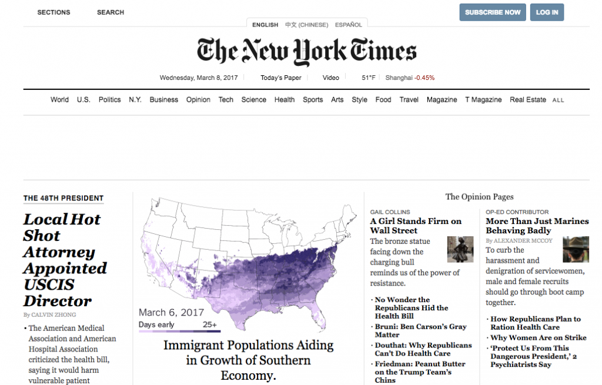

Nicole (right) representing at ECAASU 2017 Conference. Image credit ECAASU 2017 FB page
In 10 years, that is also what I hope the headline will be. Nicole Fink, a mentor, friend, and attorney, is an amazing example of how we as individuals can affect change in a community. Today, she is an immigration attorney and legal consult for NGOs, but in ten years, I think America’s families would benefit greatly from her appointment as USCIS director, bringing families together, making immigration easier, and ending the immigration backlogs. When I asked her if she wanted to become president, she kindly declined, “I would gray hairs so easily!”
Last week, I interviewed Nicole Fink, who I worked under at the East Coast Asian American Student Union. She was kind enough to take time out of her busy schedule, amidst all of the immigration-related chaos and consults to speak with me about how she got started as an activist and community organizer, and where she sees herself in the future.
We discussed a variety of issues pertaining to her work, but what stood out to me was how she pinpointed where our issues with organizing and engaging lie— empathy. We discussed how it was difficult to engage youth because many feel that they have to be personally affected in order to become involved and be engaged with these social and political issues.
Nicole discussed with me the ways that she believed we could start engaging more youth, and I actually had a moment of realization; she discussed the importance of mentorship and how that is needed to kickstart each person’s activism.
The media was also a big point of discussion, and as AAPI activists, we agreed that the problems that Asian Americans faced were not being represented in mainstream media, because they were not the stories that people bought into. (We wanted to clarify, though, that we were advocating for all people of color, and for fair representation of everyone).
If you’re interested in hearing the full interview, in which we also talk extensively about North Carolina’s political climate and the recent ECAASU conference, go to this link of all associated files, where there is an audio file and a transcription as well.


{kind=link}
{kind=link}